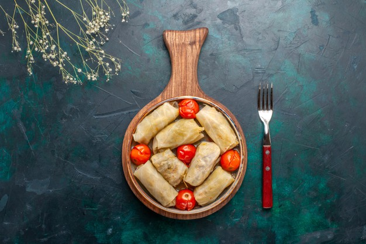

Lahana dolması
Malzemeler
- 1 su bardağı pirinç
- 1 orta boy soğan
- 1 tatlı kaşığı salça
- tuz
- Kimyon
- Karabiber
- Nane
- Pulbiber
- Maydanoz
- sıvıyağ
- İsteğe bağlı birkaç adet çeri domates
Üzeri için
- 1 tatlı kaşığı salça
- 2 yemek kaşığı zeytinyağ
- 3-4 su bardağı sıcak su
- tuz
Nasıl yapılır?
- Öncelikle tencereye su koyalım, kaynatalım.
- Kaynadıktan sonra çok az tuz atalım ve lahanayı fazla küçük olmayacak şekilde parçalara ayırıp kaynamış suda haşlayalım.Haşladıktan sonra da soğuk suda yıkayıp süzgece alalım.
- Tavamızın içerisinde sıvı yağını ve ince doğranmış soğanı kavuralım, daha sonra salça, baharatlar ekleyelim .
- 1 çay bardağı kadar olacak şekilde su ilave edelim suyu çekince tavamızı ocaktan alalım.
- İnce kıyılmış maydanozu ekleyelim.
- Lahanalardan bir sarımlık parçalar kopardıktan sonra bir ucuna iç harcında ekleyelim ve rulo gibi uzunlamasına saralım, tencereye dizelim.
- En son üzerine zeytinyağ ,tuz ve salça ekleyip 3-4 su bardağı kadar sıcak su ilave edelim .
- Kısık ateşte pişirelim(15-20 dk kadar)
- İsteğinize bağlı olarak pişirirken çeri domatesleri aralara ekleyebilirsiniz.
İŞTE PÜF NOKTALAR!!!
- Lahanaları sarmak için haşlarken ne çok fazla ne de az haşlamalısınız. Orta sertlikte olması sarma işlemini kolaylaştıracaktır.
- Sarmaya başlamadan önce lahananın sert damarlı kısımlarını kesip, sarmalar pişerken yanmaması için tencerenin tabanına dizebilirsiniz.
AFİYET OLSUN